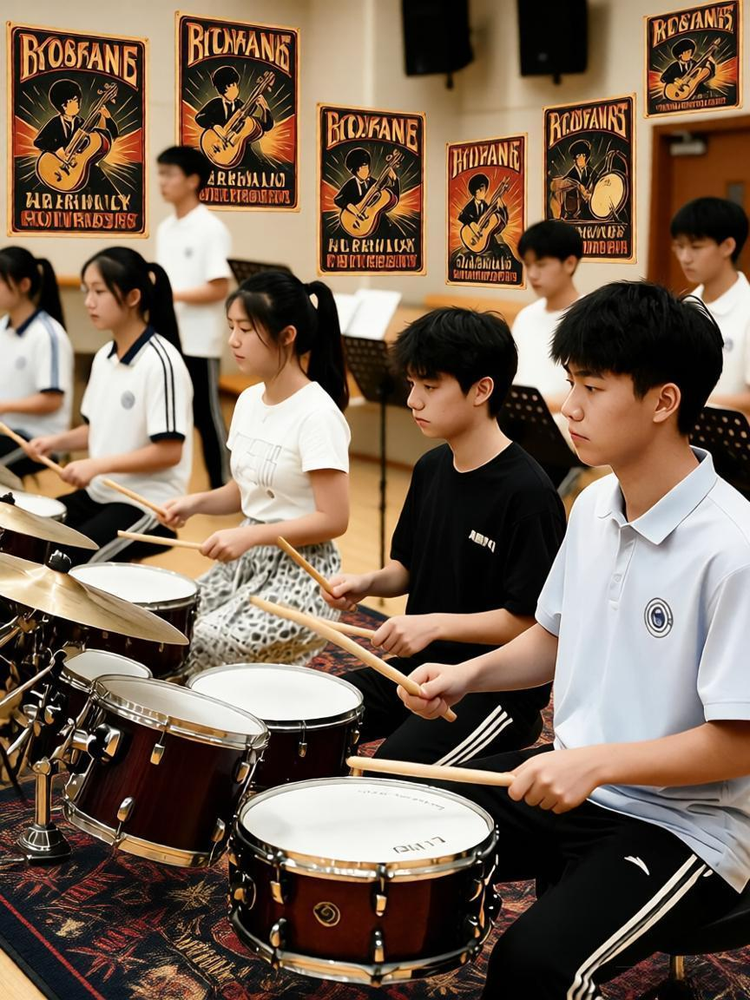

社团简介 | 活动安排 | 风采展示 | 社员故事 | 在线报名
打击乐社是学校极具活力的器乐社团，汇聚热爱架子鼓、康加鼓、小军鼓、卡洪鼓等各类打击乐器的同学。无论你是零基础小白，还是已经拥有演奏经验，我们都热烈欢迎你的到来。打击乐是音乐的骨架，掌控节奏，点燃全场气氛。社团成立多年以来，承办校园晚会、音乐节、迎新汇演等大量演出，为校内音乐爱好者搭建交流、练习、登台表演的平台。我们会定期开设基础教学，组织排练合奏节目，举办打击乐主题分享会，同时提供乐器练习场地。在这里你不只学习打鼓技巧，还可以认识志同道合的伙伴，体验舞台表演的魅力。很多社员从完全不会拿鼓棒开始，经过社团的课程和日常练习，逐步成长为可以站上晚会舞台的鼓手。社团不设门槛，不需要自带昂贵乐器，社团公共乐器可供社员日常练习使用。每一年招新，都有大量零基础同学加入，在小伙伴互相陪伴下进步。我们追求轻松友好的氛围，拒绝内卷，鼓励每个人大胆表达自己对节奏音乐的理解。如果你喜欢热烈动感的节奏，向往在舞台上释放激情，欢迎加入打击乐社大家庭，和我们一起敲击属于青春的节拍。打击乐不止是敲敲打打，更是感受律动，释放情绪，结识挚友。日常我们除正式教学外，也会组织团建、听歌会、看打击乐演出视频，丰富大家课余生活。
| 打击乐社 2026 年春季学期活动安排表 | |||
|---|---|---|---|
| 活动名称 | 时间 | 教室地点 | 备注 |
| 新成员见面会 | 3月8日晚19:00 | 艺术楼203教室 | 新社员互相认识 |
| 打击乐基础教学公开课 | 3月15日晚19:00 | 零基础入门课程 | |
| 社团内部排练周（4月全月每周二） | 艺术楼排练室 | 节目排演 | |
| 校园音乐节表演 | 5月20日 | 学校大礼堂 | 登台演出 |

点击图片查看活动介绍详情
提示：视频默认静音，需要画面里的声音可点播放器右下角喇叭；页面背景音乐请用左上角按钮。
我是大三的一名社员，刚入学的时候，我对打击乐完全一窍不通，甚至分不清不同鼓的名称。高中时代我就很喜欢听摇滚音乐，羡慕舞台上鼓手帅气的表演，但从来没有机会接触乐器。大一看到打击乐社招新摆摊，抱着试一试的心态提交报名表，那时候我连鼓棒都没有。刚进社团，内心十分忐忑，担心自己没有基础跟不上大家节奏。但是社团学长学姐非常耐心，零基础课程从握鼓棒、基础节拍一点点教起。最开始练习简单四分音符，手经常酸痛，节拍总是不稳，好几次我都怀疑自己是不是不适合打击乐。社团的伙伴会陪着我留下来在排练室反复练习，大家互相纠错、互相鼓励。慢慢的我可以完成简单节奏，之后参与社团小组排练，第一次和小伙伴合奏完整歌曲时，内心充满成就感。大二我报名参加校园晚会节目，为了登台表演，每周抽出两到三个晚上泡在排练室，反复打磨每一段节奏。登台那一瞬间，聚光灯打下来，敲击鼓面发出响亮律动，台下传来欢呼，那种体验至今难忘。社团带给我的不只是学会打鼓这一项技能，更重要的是一群志同道合朋友。课余时间，我们一起看演出，一起团建，分享音乐。有很多社员和我一样，入学时完全零基础，经过一两年学习，也能够站上舞台表演。社团里面不只有大佬，更多是一步一步成长起来普通爱好者。不需要你天赋过人，只需要保有热爱，愿意花一点点时间练习。有不少同学担心没有乐器，社团的架子鼓、卡洪鼓、各类打击小打乐器全部开放给社员练习，不需要自己购置昂贵设备。不管你性格外向还是内向，在这里都可以找到属于自己位置。打击乐可以宣泄压力，学业疲惫的时候，来到排练室敲击鼓点，所有烦恼都随着节奏释放出去。希望更多新生可以勇敢迈出第一步，不要因为自己什么都不会就望而却步，打击乐社欢迎每一位热爱节奏的同学。只要怀揣一份对节奏的喜爱，你就可以加入我们，开启属于你的打击乐故事。